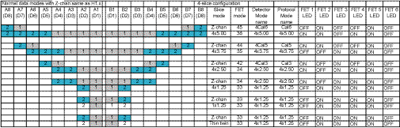
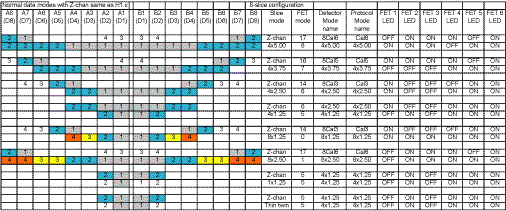

Media File 1: Full Size Illustration: Detector FET Modes - 4-Slice Operation

Illustration 1 and Illustration 2 show the slice modes and the corresponding FET control lines.
Illustration 1: Detector FET Modes - 4-Slice Operation

| NOTE: | For a scalable, full size version of Illustration 1, click on the PDF icon below. |
Media File 1: Full Size Illustration: Detector FET Modes - 4-Slice Operation

Illustration 2: Detector FET Modes - 8-Slice Operation

| NOTE: | For a scalable, full size version of Illustration 2, click on the PDF icon below. |
Media File 2: Full Size Illustration: Detector FET Modes - 8-Slice Operation